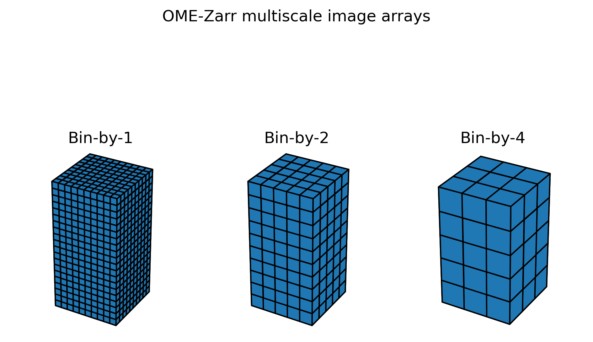
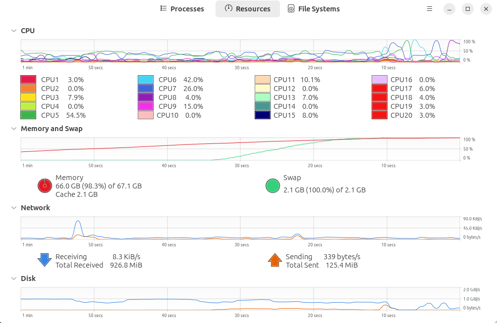

Big Imaging Data
Bridging Bioimaging and Research Software Engineering
Introduction
- Research Software Engineer
- Core developer of BrainGlobe
- UCL BioImage Interest Group co-lead
- 2025 SSI fellow

Schedule
AM (technical)
- Intro to Big Imaging Data
- Bonus content: benchmarks!
- Handling big imaging data with Python
- self-paced, collaborative learning
PM (community)
- A personal perspective
- What next for careers and community in bioimage analysis?
Find these slides at https://neuroinformatics.dev/slides-big-imaging-data-osw25/.
Acknowledgements

Thank you to HEFTIE textbook authors: David Stansby, Ruaridh Gollifer and Kimberly Meechan! * Hands-on materials based on the HEFTIE textbook * Introduction based on slides by Josh Moore, the HEFTIE textbook, and slides by textbook authors. * Has really helped me get up-to-speed!
Bioimaging formats today
- Data is getting larger
- Data is not standardised
- Community efforts to collaborate
bioformats- more recently,
OME-zarr
TIFF
- Current de facto standard (aside from proprietary)
- Large stacks: folders of 2D tiffs
- Not designed for scientific applications
bioformatscan help convert from proprietary
Limitations
- Data does not fit into memory.
- Would be nice to compress data,
- But need to uncompress whole files to read a few pixels.
- Uncompressing can be slow
Solution (spoiler!)
OME-zarr
- community support1
- uses “chunked storage”
- uses “pyramidal file format”
Chunked storage and pyramidal file formats
Folder of 2D tiffs
- A form of chunked storage
Folder of 2D tiffs
- Can access pixels in a few planes without loading whole image into memory
Folder of 2D tiffs
- Can access pixels in a few planes without loading whole image into memory
- Still only 4% of read data actually needed
Folder of 2D tiffs
- Even more limited in some situations:
Chunked storage
- Choose chunk size when we create the overall image “file”
- Save each chunk into a separate file
Chunked storage
- Note: This also favours parallel reading and writing of files!
Chunked storage
- Allows reading and decompressing fewer pixels when accessing sub arrays
Chunked storage
zarr is an open-source specification for how a large N-dimensional arrays should be stored.
Lots of choices
where should we store the data?
- on the cloud or locally?
how big should we make the chunks?
how should we compress each chunk?
Criteria:
- reading speed!
- writing speed maybe less important
- size on disk
- reading speed!
Luckily, Ruaridh and Kimberly can help!
Benchmarking zarr
Open-source zarr-benchmarks repository which is freely available
Python based using pytest-benchmark
SOON - a report summarising findings with plots, but still in progress
Benchmarking zarr
3 images: heart (335 MB), dense segmentation, sparse segmentation
- Heart: HiP-CT scan of a heart from the Human Organ Atlas
- Dense: segmented neurons from electron microscopy
- Sparse: A few select segmented neurons from electron microscopy
All sized 806 x 629 x 629
All 16-bit unsigned integer
Benchmarking zarr
3 images: heart (335 MB), dense segmentation, sparse segmentation
- Heart: HiP-CT scan of a heart from the Human Organ Atlas
- Dense: segmented neurons from electron microscopy
- Sparse: A few select segmented neurons from electron microscopy
All sized 806 x 629 x 629
All 16-bit unsigned integer
Benchmarking zarr
3 images: heart (335 MB), dense segmentation, sparse segmentation
- Heart: HiP-CT scan of a heart from the Human Organ Atlas
- Dense: segmented neurons from electron microscopy
- Sparse: A few select segmented neurons from electron microscopy
All sized 806 x 629 x 629
All 16-bit unsigned integer
Benchmarking zarr
Choice of compression library affects read time more than compression level.
Benchmarking zarr
Choice of compression library affects write time + higher compression levels take longer to write.
Benchmarking zarr
Tensorstore is a lot faster at reading data than zarr-python.
Benchmarking zarr
Large chunks compress worse + increase memory usage
Benchmarking zarr

Larger chunks are faster to read/write overall (+ make fewer files)
Benchmarking zarr

Compression ratio vs write time plot for heart image (left) and dense segmentation (right)
Segmentations normally compress a lot more (see compression ratio, y axis much higher values)
You may have to use different settings depending on your image.
Benchmarking zarr conclusions
Approximately “optimal” choices*
- Use
tensorstorelibrary for fastest read/write blosc-zstdis a good default compressor- Use a high compression level to get the smallest file size (usually means longer write times, but not much effect on read time)
- Smaller chunks = smaller overall file size + less memory usage
- Larger chunks = faster read/write times + fewer files
- It’s a balance! People often use 64x64x64 or 128x128x128
Pyramidal file formats
Chunks help with reading subsets of pixels, but what it you want to view the image as whole?
Pyramidal file formats

Idea: multiscale images!
OME zarr
Even better idea: multiscale images follow a standard..
Further topics
- tools are in flux
zarrv2 versus v3- which tools are compatible with which?!
- sharding
- filesystems don’t like many small files!
Plan
- handling OME zarr data with Python
- get your hands dirty
- gain an intuition
Default adventure
- convert a tiff stack to OME zarr
- apply a threshold to it
- colour thresholded data chunk by chunk
Self-paced learning
- encouraged to create your own adventure
- work on your own data
- some time to report back
- encouraged to get involved with others
- lots of diverse expertise in the room
Some tips
- run on small data first
- think about
- do you need to update array contents?
- are you overwriting existing contents?
- ask for help
A warning
Run on small data first

A warning
Run on small data first

Installation
Installation
or download from https://github.com/neuroinformatics-unit/slides-big-imaging-data-osw25/blob/main/tutorials/ and then run
from the tutorials/ folder in your terminal.
Default data
“The colourful mouse bone challenge”
The colourful mouse bone challenge
Label a mouse tibia by chunks
Ideas
- Adapt code to visualise/threshold remote data
- Remote data available at TODO
- Parallelise operations over chunks for large data
- Hard: what if you need info from more than one chunk?
- Benchmark-related
- run benchmarks on your own data
- vary chunksize/compression level etc.
- Skeletal Biology
- segment chunkwise into spongy (<50% bone per chunk) and compact (>50% bone per chunk)
- Hard: can we get the tutorial to run with zarr3 and latest OME-zarr
- Own ideas?!
Lunch break!
What next for community and careers in bioimage analysis?
Introductory context
- setting the scene from my perspective
- please disagree
Big imaging data
e.g. the IARPA MICrONS dataset
Big imaging data
This IARPA MICrONS dataset spans a 1.4mm x .87mm x .84 mm volume of cortex in a P87 mouse. The dataset was imaged using two-photon microscopy, microCT, and serial electron microscopy, and then reconstructed using a combination of AI and human proofreading.
- Gaining insight from large imaging data requires diverse technical expertise
- Collaboration and technical skills are essential!
Postdoc careers
Madeline Lancaster, a neuroscientist at the University of Cambridge, UK, can relate to that. In July, she received a total of 36 applications for a postdoctoral position in her laboratory, many fewer than the couple of hundred that she originally expected. “I had been nervous that I wouldn’t be able to go through all of the applications,” she says. Those 36 didn’t lead to a single appointment. “I still have not filled the position,” she says. “There seems to be lots of competition for strong candidates.” 1
Postdoc careers
Postdoc careers
Those who stayed and landed a coveted faculty position were more likely to have had a highly cited paper, changed their research topic between their PhD and postdoc, or moved abroad after receiving their doctorate. 1
My career in selected conferences
SSI Collaborations Workshop
- 2015 (Oxford) (Hackday)
- 2017 (Leeds)
- 2018 (Cardiff) (Hackday)
- 2019 (Loughborough)
- 2020 (online)
- 2023 (Manchester)
- 2024 (Warwick)
- 2025 (Stirling)
Imaging Conferences
- NEUBIAS 2018
- Microscience Microscopy Congress 2019 üßëü誂Äçüíª
- CBIAS 2022
- CBIAS 2023
- GloBIAS 2024
- CBIAS 2024 üßëü誂Äçüéì
- (CBIAS 2025 - co-organiser)
Bioimage Analyst
TODO: define
GloBIAS survey 2024
Careers paths for digital research technology professionals (RTPs) at UCL
Note that some people are de-facto RTPs, and RTPs have existed since before they were labelled.
My SSI fellowship
Peter Sieling, CC BY 2.0.
A bridge between Bioimaging and Research Software Engineering
What bridge?
Why build the bridge
- advocacy toward univerisity leadership/policy makers
- best practice knowledge exchange
- co-design
How?
Speedblogging * choose question of interest * self-organise into groups
Speedblogging tips
- assign a chair and a scribe
Speedblogging topics
TODO: link each of these topics to a google doc
- What would a bioimage analyst career path look like?
- How do we bridge the gap between generalist and domain-specific technical communities
- Bioimage analyst careers: what has been achieved/what is the next priority
- Open source in bioimage analysis

Big Imaging Data | NIU Open Software Week | 2025-08-14